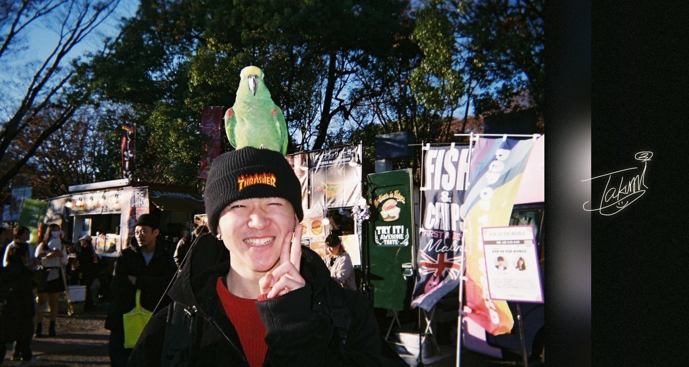
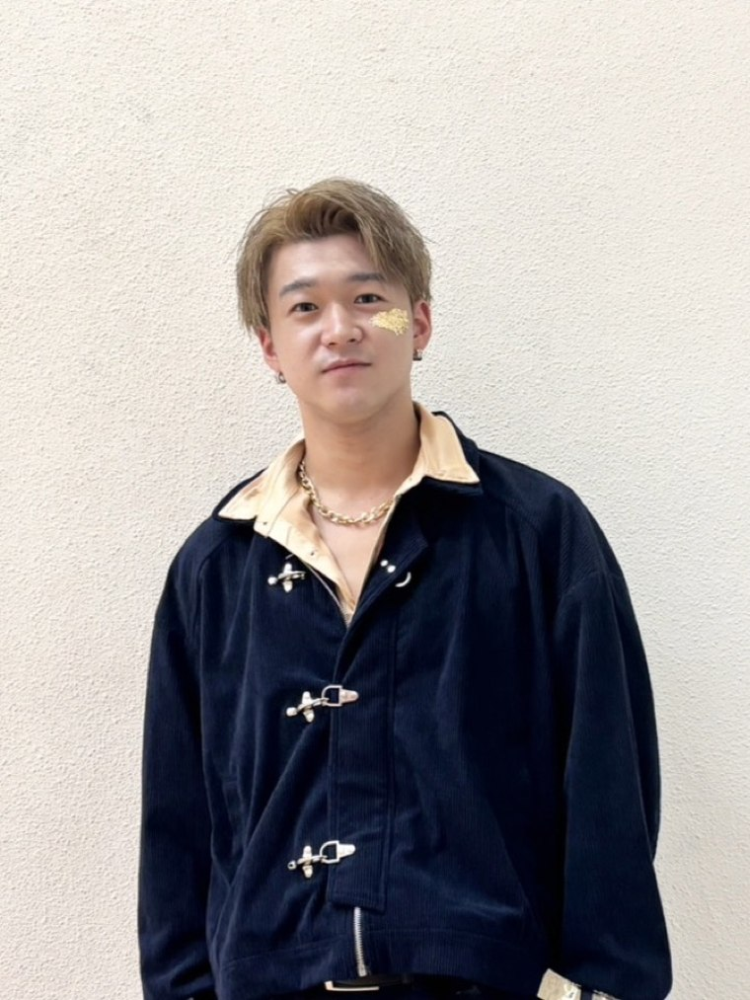
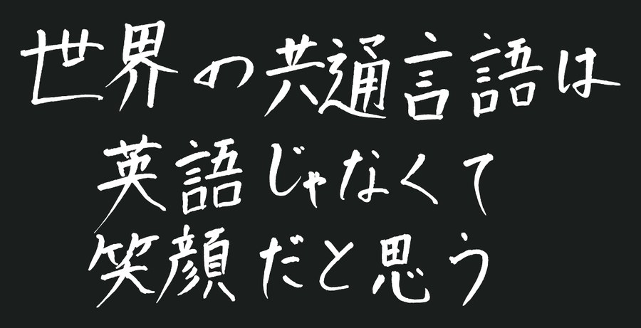

プロローグ
この春、HARIBOWに三輪卓海が加わった。株式会社HARIBOWの、初めての新入社員になる。
9月29日、彼は初めての単独公演の舞台に立つ。
前に書いた記事（体育館だと思っていた）は、2024年にBGTへ行った5人の話だ。卓海は、そこにいない。
これは、その話を100回聞いてきた人の話になる。
これを書いているのは、坂田潤弥。100回聞かせた側の一人だ。
もうひとつ、先に書いておく。9月29日の公演には、キーパーソンを一人だけ置いている。
それが、卓海だ。
第一章 確認してから決めた
卓海に声をかけたのは海野だった。ダブルダッチ・デライトのリハーサルの、会場でのことだ。
三輪卓海
HARIBOWに入るきっかけは、DDDEのリハーサル時に、海野さんから「これからハリボーとして活動していかないか」と声をかけていただいたことでした。
注DDDE＝ダブルダッチ・デライト East。学生の大きな大会で、前の記事に出てくる真秀が2023年に戦ったのと同じ大会にあたる。
三輪卓海
デライトリハの会場にいました。すごく嬉しくてやりたい気持ちだが、Chimeraに相談させてください。と答えたと思います。
その場では、返事をしていない。
ここから先が、僕たちとまるで違う。
僕たちは、自分たちで会社を作って、そこへ移った。卓海は、できあがった会社に外から入ってきた、最初の人になる。
三輪卓海
声をかけていただいた次のChimeraの練習で相談しました。Chimeraに対する気持ちとHARIBOWに対する気持ち、これからの行動等を伝え、メンバーはたくみがやりたいなら！と快く承諾してくれました。
三輪卓海
当時はChimeraがメインであったため、活動のバランスをしっかりと考え、自分がどこに重きを置くべきかを意識しながら取り組んでいました。
社員になるときも、同じやり方をしている。
三輪卓海
社員として働くことでどのような仕事を担うのか、収入や安定性はどうなのか、どのような不安要素があるのかなど、自分が抱いていた疑問を一つひとつ確認しました。
三輪卓海
その結果、不安よりも「挑戦してみたい」という気持ちの方が大きくなり、最終的にHARIBOWの社員として活動していくことを決断しました。
真秀は、要件も告げられないままグループに入れられて、27分で返事をした。竜介は電話の途中で行きたくなったと言っている。僕たちは会場も移動手段も練習場所も分からないまま、ロンドンへ発った。
卓海は、所属チームに話を通し、条件を一つずつ確認してから入っている。そうしなければならない立場で入った最初の人が、彼だった。
第二章 外から見ていた
入る前、外からHARIBOWはどう見えていたのか。
三輪卓海
自分より少しだけ上の世代の方々が海外で大きな活躍をしていて、「とにかくすごい人たちがいる」という強い衝撃を受けたことでした。
三輪卓海
シンプルに活躍して、注目されいてすごすぎる、羨ましい。そんなことを勝手に思ってました。
羨ましい、と書いてきた。外から見て羨ましかった場所に、いま自分が立っている。
入らない道もあった。そちらを選んでいたら、いま何をしていたか。
三輪卓海
おそらく体操教室の先生として働いていたと思います。もともと一般的な企業に就職するつもりはありませんでしたが、HARIBOWのお話があるまで就職について本気で考えたことは正直あまりありませんでした。
三輪卓海
自分の進路としては、人を直接笑顔にできる仕事につくことだけ決めてました。

三輪卓海。BGTのあとにHARIBOWへ入り、いまは社員として活動している。
引いたカード初めて縄に入った日のことを覚えている？
三輪卓海
覚えてます！ 正確に言うと縄に初めて入ったのは7年前です。高校の当時あったダブルダッチ部の仮入部で初めて跳びました。めちゃくちゃ難しかったのを覚えています。
7年前の仮入部から、この春の入社まで。その途中に、BGTがあった。
HARIBOWに入るために捨てたものは、と聞いた。
三輪卓海
何かを捨てたという感覚はありませんでした。自分にとって絶対に成し遂げたいことは、「人を直接笑顔にしたい」という思いだけであり、それ以外に譲れないものは特にありませんでした。
第三章 100回
三輪卓海
仕事の場では話しますが、個人的な場では自分から話すことは絶対にありません。実績は十分に理解しています。ただ、その場に自分は立っていなく自分の実績とは言えないと思ってしまうからです。
その場に自分は立っていなく、自分の実績とは言えない。
引いたカードBGTの話、これまで何回聞いた？ 正直どう思ってる？
三輪卓海
もうすでに100回以上聞いていますし、自分自身も仕事上で話す機会が多くあります。
三輪卓海
ただ、正直なところ早く自分が関わった「HARIBOWとしての大きな実績」が欲しいです。自分がいない場の実績を語るだけではなく、自分もHARIBOWの歴史に残る実績を作る一員になります。
引いたカード100回のうち、いちばんきつかった1回は？
三輪卓海
1番キツかった1回は無く、ゴッタレや2025コンテストで自分はその場に居ないけど、まるでいたかのようにHARIBOWとして自分が紹介されるのがキツかったです。
きつかった1回があるのではなく、紹介されるたびだった。
自分が入る前の実績を、自分の言葉で説明する。働いていれば、たいてい誰にでも回ってくる役目だと思う。
卓海の場合、それが「世界一」だった。
100回聞かせたのは、僕たちだ。
そして前に書いた記事は、その101回目にあたる。16,000字かけて、卓海がいない場所の話をして、それでチケットを売っている。
第四章 英語じゃなくて
引いたカードBGTに出た5人が絶対にできなくて、卓海にはできることって何？
三輪卓海
自分にしかできなくて、他のメンバーには絶対にできないことがあるとは思っていません。ただ、HARIBOWの中でも自分は「笑顔」を褒めていただく機会が一番多いと思っています。そこは自分の一番の強みだと感じています。
出演者には、座右の銘を書いてもらっている。卓海が書いたのは、これだった。

「世界の共通言語は英語じゃなくて笑顔だと思う」
この記事のいちばん上に、本人のサインが入っている。よく見ると、名前の下に顔が描いてある。笑っている。
2024年、僕たちは英語が分からないままロンドンへ行った。番組のディレクターから「チームの中に英語が堪能な人はいるか」と聞かれて、僕がグループに書いたのは「急ぎで英語喋れる人誘おう」だった。
そのあとに入ってきた人間が、これを書いている。
第五章 就職先を紹介する感覚で
引いたカード9/29のチケット、自分の友達に売るとき何て言って売ってる？
三輪卓海
自分の就職先を紹介するような感覚で誘っていました。自分がHARIBOWでどんなパフォーマンスをしているのか、活躍する姿を見てもらいたいという思いを伝えながら、少しでも興味を持ってもらえるよう声をかけていました。
引いたカード9/29に誘って断られた人、いる？ 何て言われた？
三輪卓海
断られた人はたくさんいます。理由は仕事が忙しい、間に合わないが多かったです。
仕事が忙しい。間に合わない。誰かを誘ったことがあるなら、聞いたことのある断り方だと思う。
三輪卓海
乱縄の同期達です。みんな仕事忙しいんだろうなと思っているが、やっぱり見て欲しい人たち。
5人も同じことをやっている。近い人ほど誘うのが慎重になる、と竜介は言っていた。来てほしいから、慎重になる。
第六章 たくみらしさ
引いたカードいま、人生で一番怖いことは？ …（間を置いて）… 9/29の本番で一番怖いことは？
三輪卓海
人生で一番怖いのは、自分が必要とされなくなることです。これからも自分は、「たくみらしさ」という部分で勝負していきます。
三輪卓海
単独公演当日に一番怖いのは、忘れ物です。何個も衣装あるので何一つ忘れないようにします。
前の記事に、僕も同じことを書いた。縄に引っかかるだけで、必要とされなくなる、と。
10年やってきた人間と、入って間もない人間が、同じところを怖がっている。
エピローグ ほとんど、初めて
引いたカード今日ここで話したことで、初めて言うことある？
三輪卓海
基本自分の考えとかを周りに話すことないので、大体のことは初めて言葉にしました。
同じことを5人にも聞いた。4人が、初めて言うことはあまりない、と答えている。何年も一緒にいて、喋りすぎているからだ。
卓海は逆だった。
9月29日、三輪卓海はあの5人と同じ舞台に立つ。BGTの話を101回目にする側ではなく、次の話をつくる側として。
いつかまた、誰かがHARIBOWの話を100回することになる。
その話には、卓海がいる。
自分もHARIBOWの歴史に残る実績を作る一員になります。
2026年9月29日（火）、めぐろパーシモンホール 大ホール。開場18:00、開演19:30。HARIBOW初の単独公演「Go BEYOND」。
彼が何をやるのかは、9月29日に、客席で分かる。
そこからが、彼の実績になる。
三輪卓海は、2026年9月29日、めぐろパーシモンホールの大ホールに立ちます。
HARIBOW 初の単独公演「Go BEYOND」
2026年9月29日（火） めぐろパーシモンホール 大ホール
座席を見る・チケットを買う
公演の詳細を見る